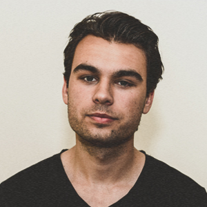

Een designer met een passie voor digitale media.
Mijn naam is Robin Tuijnenburg. Een 24-jarige designer met een passie voor digitale media. Momenteel studeer ik Communication en Multimedia Design aan de Hogeschool van Amsterdam waar ik mij specialiseer in Visual/UI Design. Als ontwerper ben ik altijd op zoek naar de beste samenhang tussen functionaliteit, esthetiek en onderscheidenheid. Ik ben dan ook voortdurend bezig met het analyseren en uitproberen van visuele stijlen of nieuwe technieken. Mijn vrije tijd besteed ik naast vormgeven, aan het luisteren van muziek, voetbal en uitgaan met vrienden. Voor vragen of interesse in een samenwerking kun je altijd mailen naar r.tuijnenburg@gmail.com en voor meer werk kun je mijn tumblrpagina bekijken.